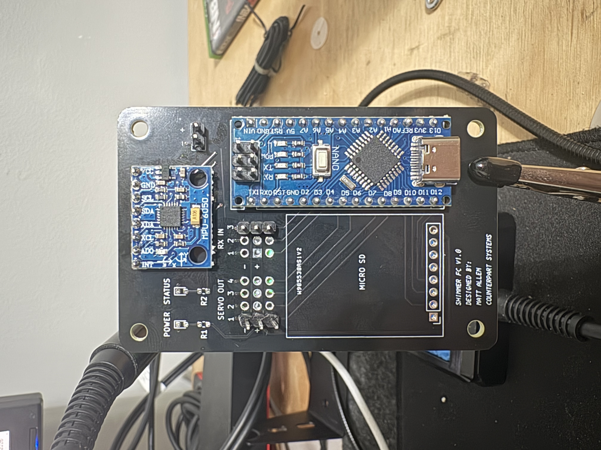
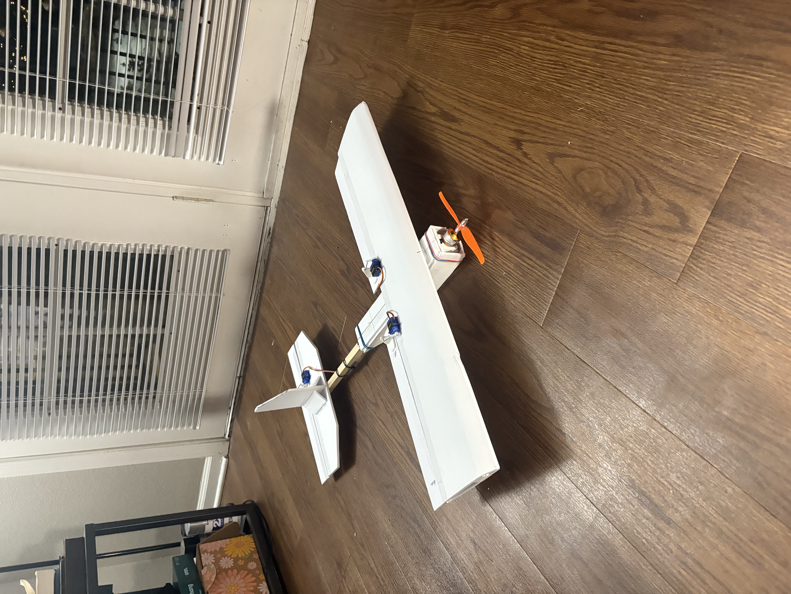
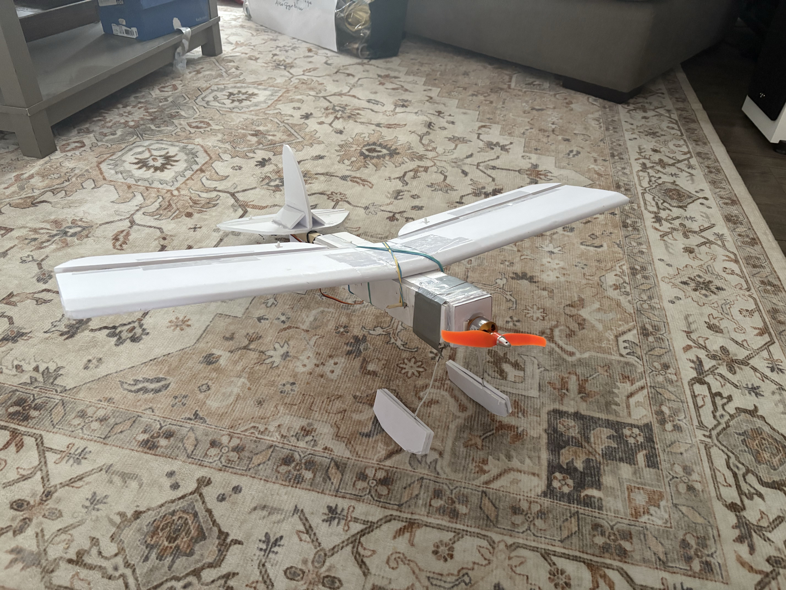

SHIMMER
FLIGHT CONTROLLER PCB
Overview
Shimmer is a fully custom STM32 based flight controller I designed in KiCad. Rather than using an off the shelf flight controller, I wanted to try and design my own, mainly to learn more about PCB design and embedded systems. I started out with a prototype breadboard, moved to an Arduino Nano PCB baseboard, and then finally created a custom STM32 PCB. I've also built an RC plane from scratch as a testbed for this FC. More on that later...
This project was my first real experience with PCB design, and I'm sure that my design is far from optimal. It was definitely challenging, but I really enjoyed the process.
If you're interested in learning more about PCB design, I highly recommend checking out Phil's Lab tutorials on YouTube.

Details
"Shimmer" comes from a type of reverb effect that shares the same name. I think it sounds cool, so I named the FC after it.
Prototype Development
For an initial prototype, I used an Arduino Nano and an MPU6050 breakout board to measure orientation in degrees (roll, pitch, yaw).
The MPU6050 contains an accelerometer and a gyroscope. Although both of these can measure orientation, they both have downfalls. To correct for this, I used a complementary filter, which fuses the data from both.
Baseboard Design
Once I had the prototype figured out, I designed a custom PCB "baseboard". This connects the Arduino and other modules together more securely and neatly. This method has many pros and cons.
Pros:
- Cheap, if you already have modules
- Quick to design
- Less prone to initial errors
- Far simpler than a full PCB
Cons:
- Larger
- Limited component choice and implementation
- Far less powerful (depending on MCU)
- Less polished
V1.0 PCB Design
Designing the first PCB was fairly straightforward. Wire everything up on a schematic, just like it was done on the breadboard, and then route the PCB.

After the schematic was complete, I then layed out all of the components and routed them.

The 3D Render looks like this:

I ordered V1.0 PCBs through PCBWay, and assembled them once they arrived (no SD card module yet).

V2.0 Design
After the V1.0 was complete, I then began designing V2.0. Shimmer contains the following components:
- STMF103C8T6 Microcontroller (Brains)
- MPU6050 Interial Measurement Unit (Orientation Sensor)
- 5V Voltage Regulator (Power Supply)
- Crystal Oscillator (Clock)
- 4 Inputs for RC Receiver Channels (Or PPM)
- 4 PWM Outputs for Controlling Servos / ESCs
- UART, SPI, and SWD headers for additional communication
- Micro USB connector for programming and bench power
Schematic Design
Once I had components selected and criteria defined, I created a schematic.


PCB Layout
Laying out and routing all of the traces for this PCB was super fun and rewarding. After a few iterations, I landed on this: (The pink box in the middle is from my logo on the back silkscreen.)

The MCU is positioned near the middle, with the decoupling capacitors and crystal oscillator as close as possible. The IMU is right above. I included a switch to put the MCU in boot mode which allows me to program it easily.
Other important features include:
- Power Switcher: U4 is an LM66200 Dual Ideal Diode with automatic switchover. This just means that I can power the board by either 5V from the ESC's battery elimator circuit (BEC), or USB.
- Debug LEDS: I've positioned an LED to indicate if the board has power, and 3 programmable LEDs for debugging and status updates.
To test this board, I designed and built a small foam RC plane. This design was fully custom, and it was built out of foamboard. I used a small 850mAh 3S LiPo, and a cheap 2200kV brushless motor with a 30A ESC.

The first iteration was okay, but the wings lacked dihedral, which made it really unstable. I lightened it up, made it a bit smaller, added dihedral, and made some "floats" on the bottom. I tested this during winter, and it took off great from the snow.

If I did this again, theres lots I would do different. I would use a ground plane on the top layer, as well as spend more time placing compoenents before routing traces.
That's all I've got so far for this project! I was able to get bench tests working, but due to moving back to school, I haven't had a change to do any flights test yet. More to come!